10 рецептов зеленых смузи от Шведских блогеров
Насладиться зеленым коктейлем за завтраком крайне полезно для настроения и здоровья! Смузи - отличное начало дня, витамины и детокс в одном блюде. Мы подобрали для вас 10 рецептов зеленых коктейлей от лучших Шведских блогеров.
Авокадосмузи от Sofia Sjöströms
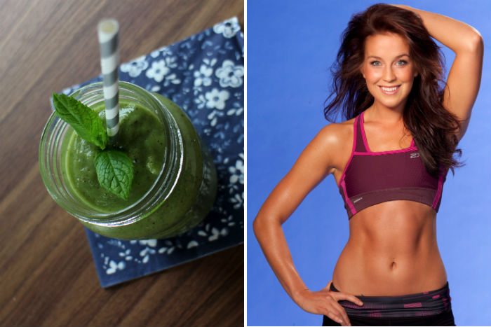
Состав смузи:
1 авокадо
1 ч.л. хлореллы
1 лайм
Мята по вкусу
Протеин (опционально, следуйте инструкции и рекомендациям на упаковке вашего конкретного протеина)
2-3 ст.л. манго (можно замороженное)
2-3- ломтика ананаса
1 яблоко
Все продукты измельчить в блендере и можно подавать!
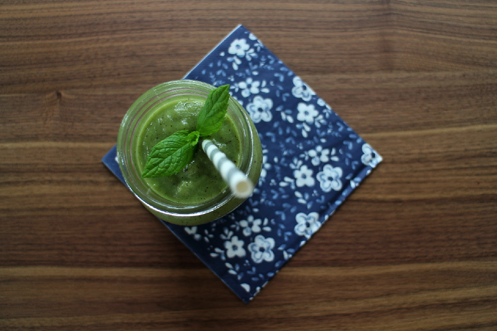
Зеленый смузи от Sassa Asli
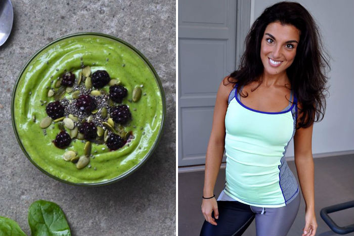
Состав смузи:
200-300 стакана несладкого миндального молока
1 авокадо
Большая горсть шпината
1 банан или 1/2 манго или и то и другое вместе
1 ст. л. кокосовых хлопьев
1 чл. кокосового масла холодного отжима (можно заменить любым на ваш вкус маслом - оливковым, кунжутным)
2 столовые ложки лимонного сока
2-3 см имбиря
1 чайную ложку семян Чиа
Как обычно - все в блендер и можно есть!
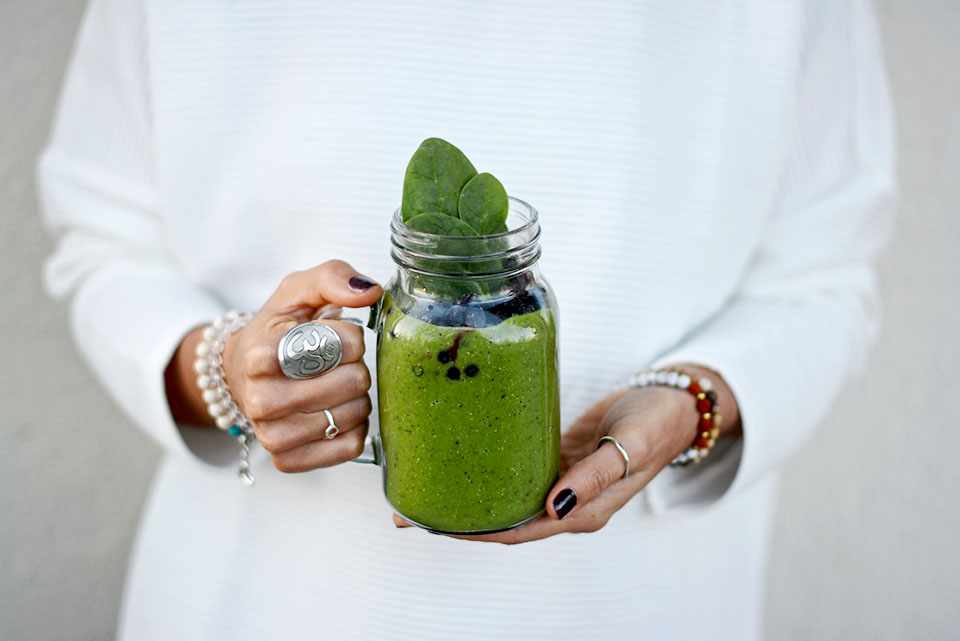
Зеленый викингсмузи от Johanna
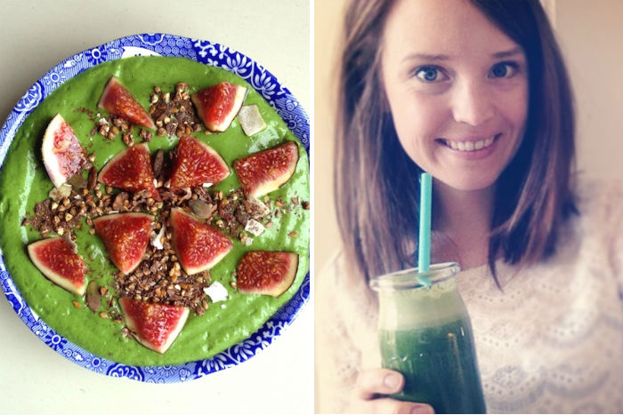
Состав смузи:
1 банан
2 кулака салатной зелени
сельдерей на ваш вкус
1 чашка замороженного шпината
1 яблоко
1 ст.л. арахисового масла
250 мл воды
1 ст.л. измельченного льняного семени
1 ст.л. конопляного белка
1 ч.л. спирулины
1/2 авокадо
Поместите все ингредиенты в блендер и включите его на полную мощность, пусть взбивает и измельчает до тех пор пока не получится гладкая и шелковистая текстура.
Налейте в миску, сверху посыпьте мюсли и инжиром (апельсин, лимон, яблоко - т.е. на ваш вкус и предпочтения). Приятного аппетита!
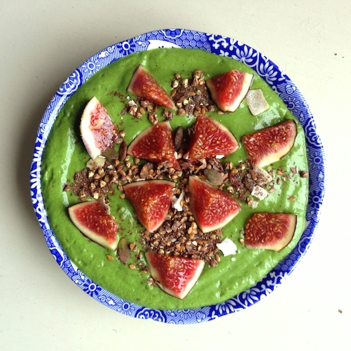
Зеленый старт от Janni Delér
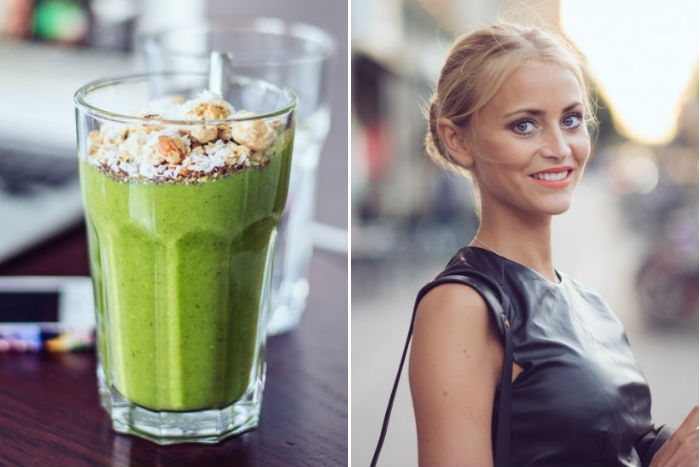
Состав смузи:
100 мл воды
50 г замороженного шпината (свежий так же подходит)
50 г замороженного манго
Сок из половины апельсина
1-2 ч.л. цедры апельсина
Сок из половины лимона
Половина авокадо
Половина банана
Взбить блендром и можно подавать к столу.
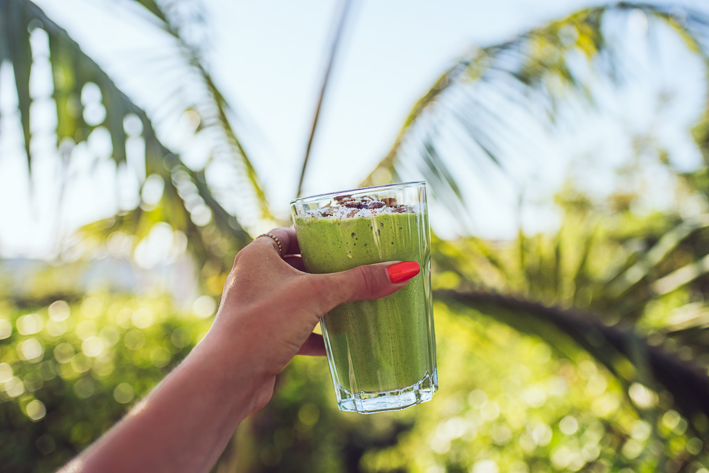
Зеленый смузи от Hannah Andersson
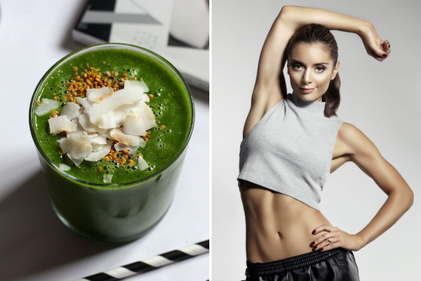
Состав смузи:
3 небольших кулака шпината
1 банан
1 киви
Сок одного лимона
Лед
200 мл кокосовой воды
Все смешать до однородной гладкой консистенции и можно наслаждаться вкусным смузи.
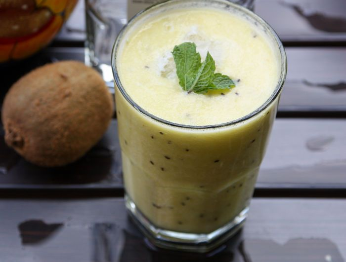
Грушево-авокадное смузи от Evelina Göransson
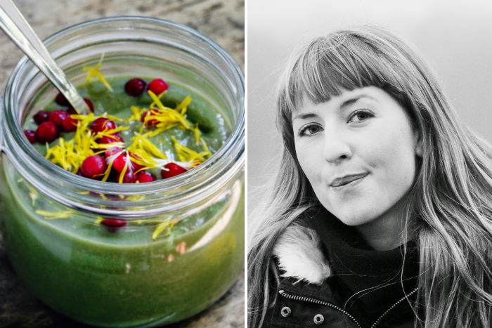
Состав смузи:
1 авокадо
2 груши
Горсть листьев крапивы
Клюква и листья одуванчика для украшения
Взбить все ингредиенты до пюреобразного состояния. Украсить клюквой и лепестками одуванчика. Приятного аппетита!
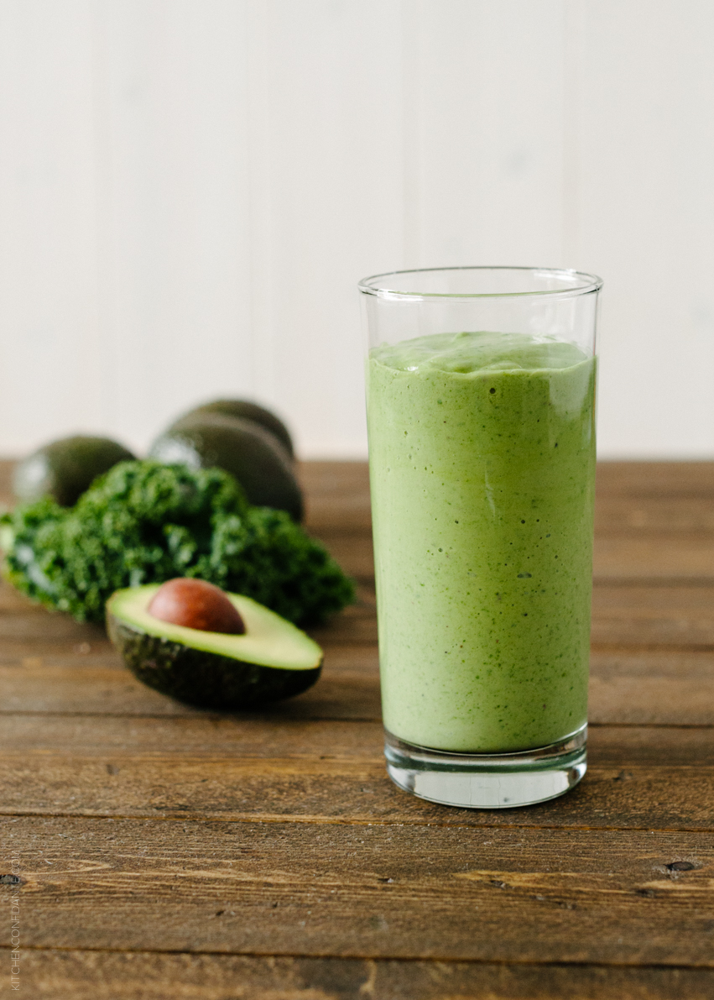
Вегетарианский детокс и смузи от Ida-Marie Isaksson
Состав смузи:
Горсть листьев шпината
1/4 лимона
1/3 огурца
1 морковь
1 кружок имбиря (как монетка)
2 клубники
Вода
Как обычно - все измельчить и можно пить.
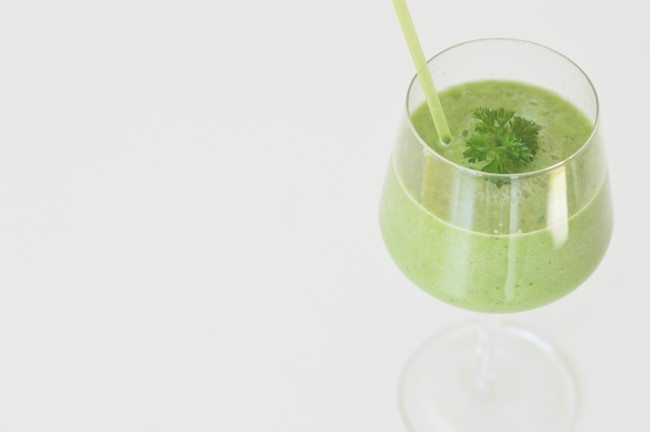
Смузи с савойской капустой от Nina Kaufmann
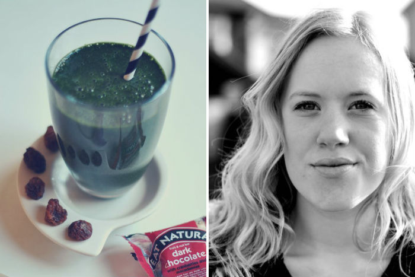
Состав смузи:
1 спелый банан
2 кулака листьев савойской капусты
1 ст.л. хлореллы
1 ч.л. измельченных семян льна
1 ч.л. мака
1/2 чайной ложки гуараны
Щепотка корицы
Щепотка куркумы
Кокосовый напиток или кокосовая вода по вкусу
Смешать в блендерк и наслаждайтесь!
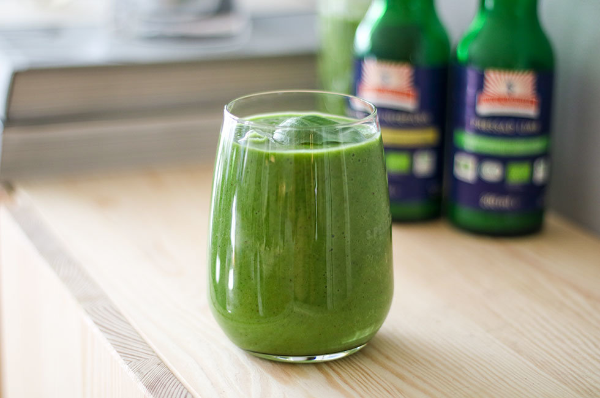
Смузи от Linnéas Skafferi
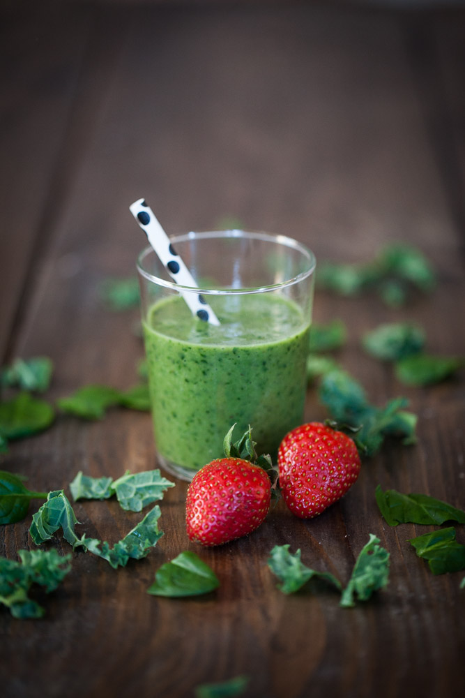
Состав смузи:
2 кулачка нарезанной савойской капусты
1 горсть шпината
1/2 банана
1/2 авокадо
1 щепотка ванили
около 200 мл овсяного молока или воды
Смешать все ингредиенты, жидкость добавлять постепенно, добиваясь гладкой и воздушной консистенции. Приятного аппетита!
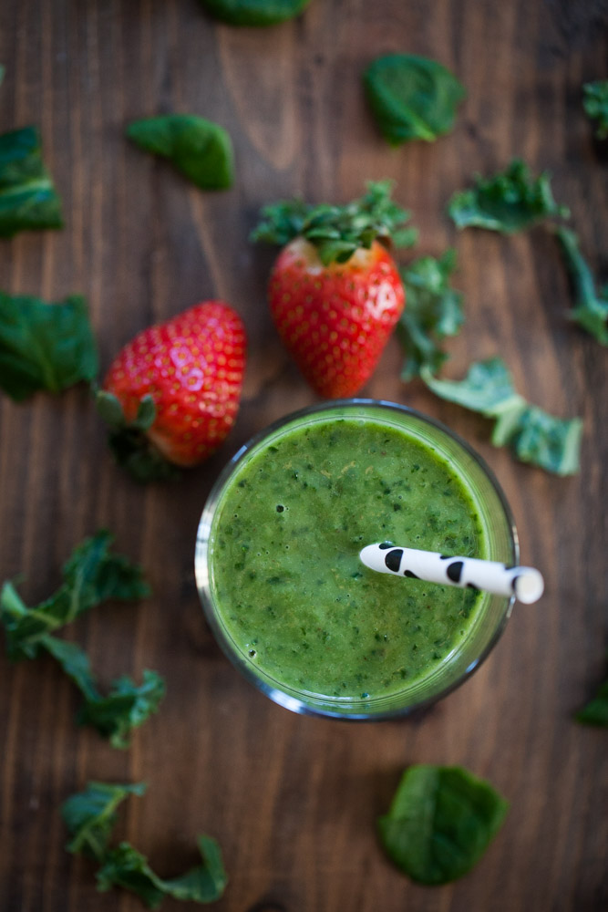
Зеленый смузи от Annie
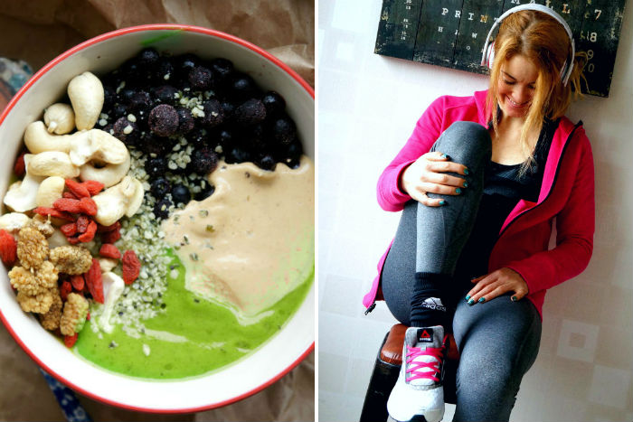
Состав смузи:
1 замороженный банан
2 горсти шпината
200 мл пюре тыквы
1 щепотка ванили
1 ч.л. лимонного сока
4 финика
Кокосовая вода по вкусу
Все взбить блендером, сверху украсить чем угодно - шелковицей, ежевикой, малиной, орехами, мюслями., ягодами годжи и т.п. Можно подавать!
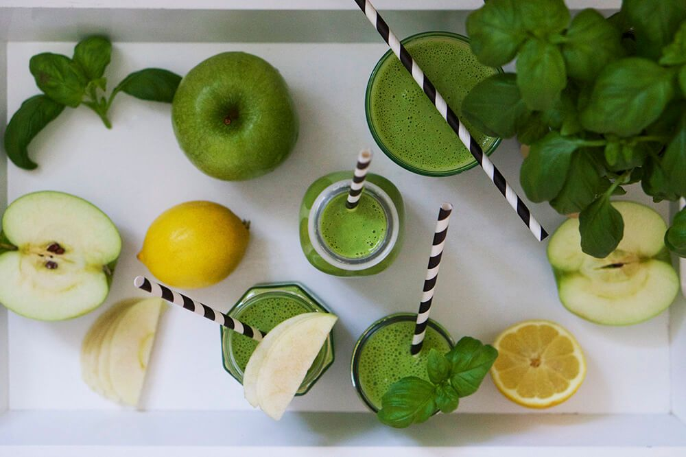
Будьте здоровы!


Станьте первым!